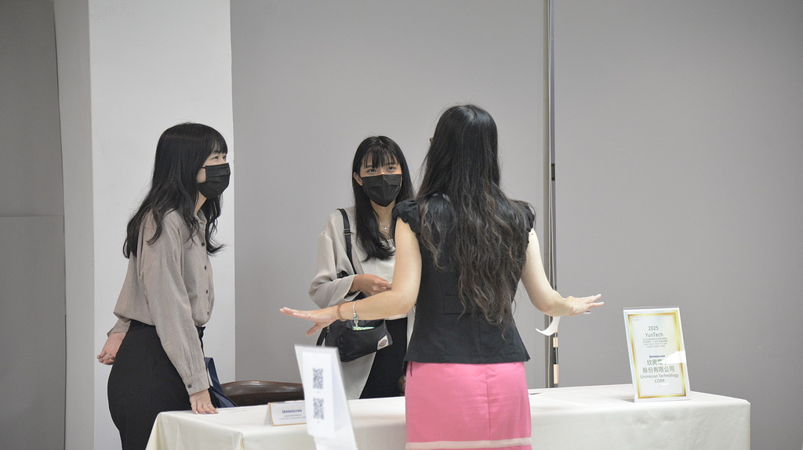

職涯的啟動
春天是雲科大校園最充滿活力的季節。學生們脫下厚重的外套，在溫暖的陽光下為即將到來的運動會做準備。 操場上總能看到學生們熱身奔跑的身影，空氣中瀰漫著青春與活力的氣息。
對於大四生來說，春天更是職涯的關鍵時刻。就業博覽會在校園裡盛大展開， 學生們穿著正式服裝，帶著精心準備的履歷，在各大企業攤位間穿梭。 臉上帶著對未來的忐忑與衝勁，這是他們從校園走向職場的重要轉折點。
這個季節，校園裡充滿了對未來的期待與規劃。無論是即將畢業的大四生， 還是正在為未來做準備的其他年級學生，都在這個充滿希望的季節裡， 為自己的職涯道路做著重要的決定。
